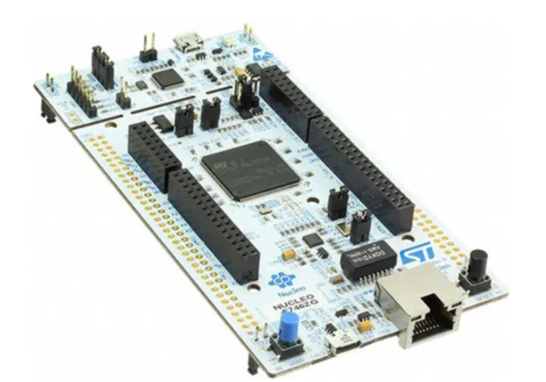

STM32 Nucleo-144™ Microcontroller Board
Morpho Expansion Board
This project is a template for Morpho expansion boards for STM's family of
STM32 Nucleo-144
development boards.
This project includes a PCB edge defined as the same size as the Nucleo-144 mainboard
with Morpho connectors placed correctly to align the two boards.

2022 Eddy LAFOND